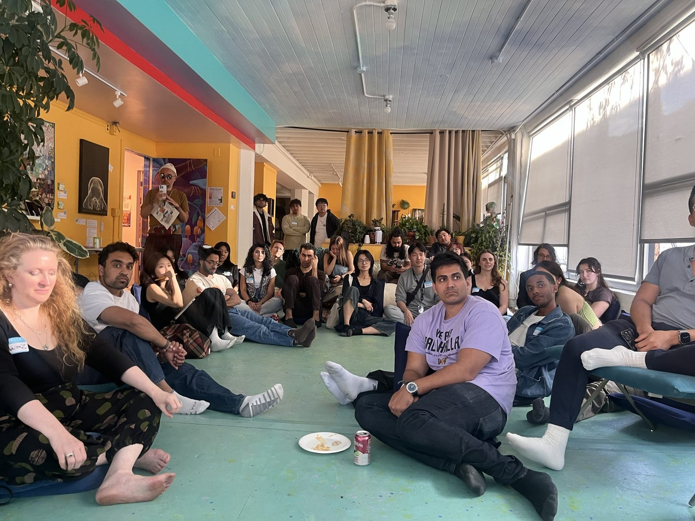

For artists
Be a CAN
See yourself as a Community Arts Navigator? We're looking for artists who feel called to this kind of peer support and cultural weaving work.
Express interest →Program · pilot
Artists supporting artists. Artists helping neighbors find the art that speaks to what they're carrying.
Community Arts Navigators (CANs) are trained artists who work in two directions. They act as peer mentors supporting fellow artists — helping them find space, opportunity, and one another. And they act as cultural care specialists for their neighbors — helping people find the art and artists who speak to what they're carrying: questions of grief, place, belonging, politics, identity, meaning, joy.
This program is rooted in the Community Health Worker model, which has long succeeded by training and stipending trusted community members to bridge informal knowledge and formal systems. Arts and culture have separately been 'prescribed' as care. CANs draw on both lineages and extend them into the wider work of helping a community find itself through art.
Six verbs
Listens to neighbors, learning what they're carrying and pointing them toward the artist, the show, the gallery that might offer something new and meaningful.
Weaves relationships between artists, venues, small businesses, and residents.
Stewards shared spaces — matching artists who need room with hosts who have it.
Surfaces opportunities — grants, gigs, calls, free resources — in ways that actually reach people.
Hosts gatherings that build trust and spark collaboration.
Listens and reports back so EACH and the wider field learn what artists and communities actually need.

Where we are
We're in pilot mode. As we gather resources, we're also gathering interest from artists who see themselves in this role.
For artists
See yourself as a Community Arts Navigator? We're looking for artists who feel called to this kind of peer support and cultural weaving work.
Express interest →For neighbors & orgs
Want to be connected to artists and cultural life in your neighborhood? CANs are here for you.
Get connected →For funders
We're raising funds to support this pilot. Get in touch if this piques your interest.
Learn more →One email a month, give or take: meetups, resources, and opportunities. No spam. Just art and community.